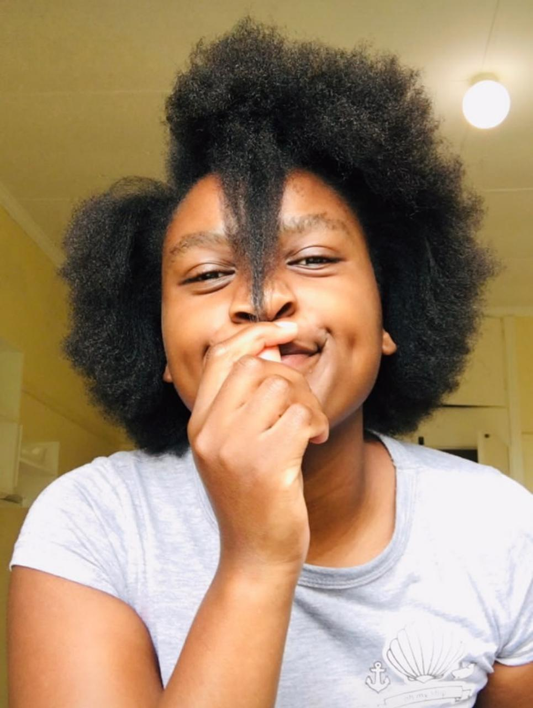
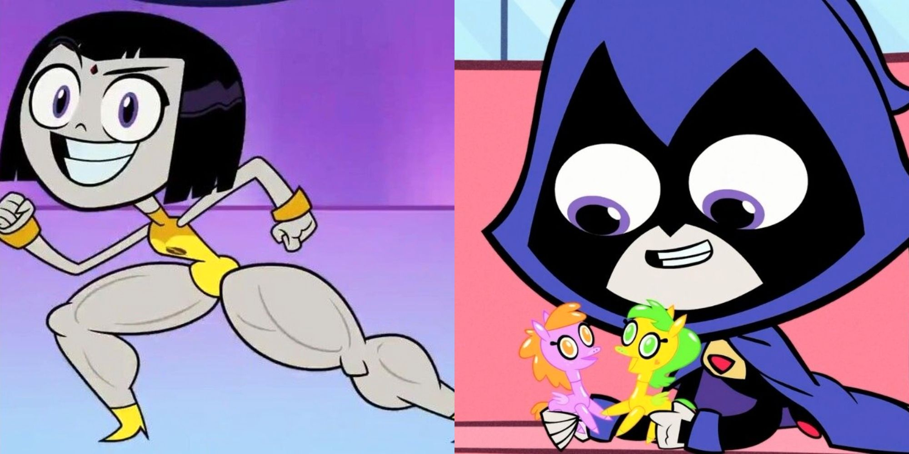
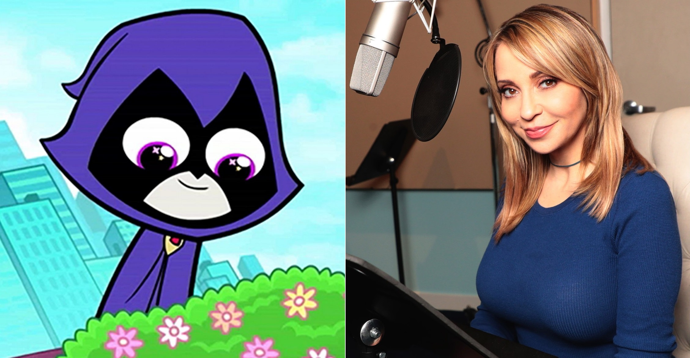

All About Me
Sinazo Ndovela's Blog
Sinazo Ndovela's Blog
|
Sinazo Ndovela 
|
 |
|  |
|---|
|  |
Raven is a fictional superheroine appearing in American comic books published by DC Comics. The character first appeared in a special insert in DC Comics Presents #26 (October 1980), and was created by writer Marv Wolfman and artist George Pérez.[1] A Cambion, daughter of a demon father (Trigon) and human mother (Arella), Raven is a powerful empath who can sense emotions and control her "soul-self", which can fight physically, as well as act as Raven's eyes and ears away from her physical body; more recently, she's been shown as being adept with various types of magic and sorcery. She is a prominent member of the superhero team Teen Titans. The character also goes by the alias Rachel Roth as a false civilian name. Raven is on of my Favourite cartoon charector on TV she is full fun but hides it |
|---|
Nature is that natural and physical world that surrounds us
and gives us excitement to explore all
the parts of the world Nature is the heart of the earth.
Well I love the nature so I take pictures everytime I see a beautiful View.
At night look up in the sky and watch the stars glowing,
the patterns they make and the milky way looks so perfact I feel connected to the universe,


One thing that I have more than love for is shopping Fashion and also selling fashion. Fashion is another form of art for me so from screenshoting gloumorous outfits, to buying a few tranding items and selling to the fashion lovers like bring me some joy.